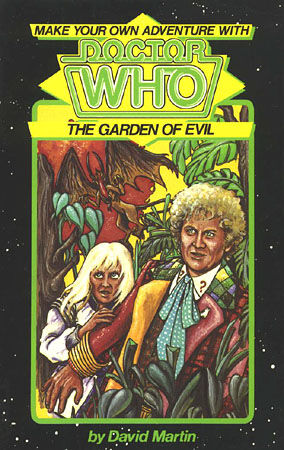

|
The Garden of Evil
|
NOTE BASIC PLOT DOCTOR COMPANIONS MATERIALISATION CIRCUIT (12) The New Genia rainforest you grew up in, a short walk away from the now dormant volcano. (14) A bleak asteroid in the Madara Reef, already being mined by slaves. (11.2) Driven off course by the Space dust, the TARDIS materialises in a transparent elevator shaft on the side of the Spire of Ninety Souls, inside the Sky Diamond outside of Mandara. (6.4) The boiling surface of Mandara. (19) Somewhere in Mandara's titular garden, about half a day’s walk from the Maker’s keep. (37.9) A few years after the rest of the adventure, a pleasant public park where Riff City was formerly located on Gallifrey. PREPARATORY READING CONTINUITY REFERENCES (8.1) "Dangling by a length of ratty string straw-coloured twine from all this technological wizardry was a much-thumbed instruction manual. You picked it up and read the lettering on the cover. It was in English, which you thought was rather strange, and read: 'TARDIS TYPE 40 MASTER CONTROL CONSOLE OPERATING AND REPAIR MANUAL DO NOT REMOVE'" We've seen a number of TARDIS instruction manuals that the Doctor owns in The Horns of Nimon, The Pirate Planet and Vengeance on Varos. The fact that the Sixth Doctor is now eagerly studying such a manual instead of ignoring it implies notable personal growth since Varos. (8.2) "CHECKING COMPLETE + CHAMELEON CIRCUIT DOWN + OTHER FUNCTIONS GO + NEXT." An Unearthly Child et al. Reminiscent of the fact the Sixth Doctor tried to repair the circuit in Attack of the Cybermen, retroactively implying it was because he was so annoyed by this start-up message reminding him of the fault every single time he's used the TARDIS. (17.4) "Don't get me wrong, Wings, the Doctor's a great guy, but he's a Time Lord. If he gets totalled, he can regenerate." The Tenth Planet et al, with Planet of the Spiders being the first time the term 'regenerate' was used. (19.5) When asked why he's carrying around a penny whistle, the Doctor explains: "'A predecessor of mine was very musical,' smiled the Doctor. 'But none of the rest of us ever learned to play it. Odd how these little things have their uses. Would anyone like a late-twentieth-century jelly baby?' The Doctor passed around a small paper bag." The Second Doctor's musical nature was frequently seen with his habitual recorder playing, first in Power of the Daleks. The sixth was likely inspired to carry the whistle around with him since meeting his past self in The Two Doctors. The Second Doctor offered jelly babies in The Three Doctors, even if this is likely referencing that the Fourth made a habit of it. (Robot et al.) (36) "You shut your eyes. When you opened them again, you saw an image of the Doctor standing at the TARDIS console. He had his back to you, setting the slide controls of the space-time co-ordinates. Your heart leaped with joy that he had escaped, but when he turned round, it was The Maker's face that looked at you, smiling evilly, certain of his final triumph." A stretch, but I couldn't help but be reminded of the final shot of Trial of a Time Lord, where the Valeyard reveals himself as the keeper of the Matrix. Also, hilarious to note is this is the second gamebook (the first being Search for the Doctor) that partially hinges on the villain taking control of the Doctor's body. What an unlucky couple of weeks! OLD FRIENDS AND OLD ENEMIES NEW FRIENDS AND NEW ENEMIES The Malian Guard, whom the Time Lords have given free reign over the other refugees. The Maker, Prophet Ellis's first and most resentful creation made in his own image. The Hoggarath, 'mythical spawn of the devil' bio-engineered by the Maker. The Omnidroid, a giant robotic cockroach-man who travels across the Galaxy to carry out the Maker's bidding. The Slayer, a robotic black knight that challenges you to a duel to distract you while another robot resembling the Grim Reaper waits for an opportunity to trample you.
CONTINUITY COCK-UPS PLUGGING THE HOLES [Fan-wank theorizing of how to fix continuity cock-ups] FEATURED ALIEN RACES (2.2) Naturally, a few Time Lords appear and are an overbearing presence, even if we don't meet any named ones outside of the Doctor. (4.7) Ambiguously sapient 'Mover Pears' on sale in a Time Lord marketplace. They follow you around until they're eaten, which is horrifying. (6.2) Litheruians, squat blue humanoids who culturally resemble Inuit stereotypes. (6.7, 6.8) We get a cavalcade of mentioned refugee races uniting to riot against the careless Time Lords: Grey, wolf-like quadrupeds from Zagaroth; the rabbit-sized and startled looking Yumi; the Muselians, Irrs and Shua, who are all 'bipedal variants' (of... something?); winged Spicans; Fomalahut Amphibians; Adharan mammoth hybrids; tailed and crystal encrusted Achernari; and the Deneb Clusters, colony creatures who can change their shape at will. As well as 'all the human and humanoid variants from Altair to Zeta Cancri.' Phew. (6.8) The Kafkaesque half-man, half-cockroach android named the Omnidroid. (13.8) The Abadi, synthetic humans Ellis developed to be free from all aggression and anger. Creatures from Mandara's garden: the Hoggarath (11.10), relocated to the Sky Diamond to slaughter the Abadi, a part-puma part-gorilla creature (20.2); humanoid river skeletons (21.2); a hivemind inhabiting the trees (21.2); the 'shadow pack' who are an embodiment of fear itself (23.3); and a variety of secretly carnivorous fruit waiting to ironically sink their fangs into meat (25.3). FEATURED LOCATIONS (4.2) Through flashback, the top of a volcano in a New Geniua rainforest where you crash landed as a little boy, Tarzan-style. We see it in the present after the volcano has erupted (12). The second major part of the book takes place in a variety of locations encompassing the red sun of Mandara and its asteroid belt. An asteroid mid-mining operation (14), the Sky Diamond: a gigantic asteroid made of hollow diamond containing a spiritual centre called The Spire of Ninety Souls (11.2) and Mandara itself. The garden is an odd tiny part of the sun the Maker has forced to be free of the heat, creating a small oxygen-rich ecosystem he can live in. It's mostly just petrified, stony trees (19.2) and rivers of grey slime. (21) The garden also includes a section where thousands of Ellis's followers have been turned into a gestalt hivemind (21.2), a tiny undisturbed lush pocket of greenery (25.2) and the Maker's mountainside keep. (33.5) At the very end (27.9), you return to Riff City a few years later, which is now a carefully maintained park of trees from across the galaxy from those grateful for the Time Lords' help. ENDINGS (6.4) The TARDIS suffers a malfunction that only you and Suri notice. Unfortunately, Suri is being telepathically controlled by the Maker and gives you an 'energy capsule' that either makes you as easily controlled or acts as an odd drug. The two of you lie about noticing anything wrong and step out onto the surface of Mandara, the Maker setting up an illusion to make it look like a pleasant spring valley. Suri steals the TARDIS as you, Mack and the Doctor get burnt to a crisp. This ending is implied to be a time loop that you can't break out of until rolling the correct number with dice. (7.2) Mack's dimensionally unstable magic space dust accidentally wipes him and the Doctor out of existence, while it transports you to the 121st dimension - where you become a thought waiting for someone to occur to. (10) You run into the Prydonian Academy to escape a Malian, hiding in a large transparent gallery filled with plants. It turns out to be the enclosure of a giant taipan that fills you with enough venom to kill thirty men. (12) You psychically steal control of the TARDIS while the Doctor isn't around (he is, he's just testing you) and go home to your rainforest. You regret the decision as your old lifestyle feels empty and find the TARDIS has disappeared since you left it. You become a ground-breaking ecologist using your telepathy to help and understand animals to the extent that no one else can. Still, the regret of abandoning Mack and the Doctor weighs on you, as you never see them again. There's no mention of the Maker's plan, so it's unclear whether the Doctor managed to stop him or not. (14.2) You force the TARDIS to course correct to an asteroid being mined by slaves. You and Mack are strangled to death by 'clandroids' (clone androids) with whips while you're unsure if the Doctor has escaped or not. (17.4) You and Mack's epic and heroic escape from the Hoggarthi is cut short when you accidentally walk into the bottom of an elevator shaft... as the elevator rapidly falls to crush you. (18.2) Mack greedily destroys the holographic Ellis for his power supply of space dust, before the Omnidroid jumps him and tears the two of you to pieces with its mandibles. (20.2) You take the wrong route while being chased by a creature that has the body of a gorilla and the head of a puma, being crushed to death by its sheer weight in a cave. (23.2) You try to run away from three Malians chasing you by hiding in a water pipe, but all three catch up to you and kill you right then and there. (24) You take your chances with fighting the fruit head-on instead of the shadow pack, and you slip while fighting them. The apples, plums and apricots viciously tear you to shreds with their fangs, the last thing you ever smell being overwhelming sweetness. The shadow pack eat your skeleton once they're done, which is just adding insult to injury. (26.2) You are pulled underground by roots and become part of the hivemind entity that lives in the garden's trees. You're comforted by the sensation and remark on the irony that you had grown up in a forest and are now a forest itself. You consider this slavery better than death as the Maker succeeds in his plan to wipe out all organic life in the universe. (28.2) You accept the Slayer's challenge and deftly prove a good fighter against the robotic knight, expertly dodging his axe. You then notice another robot resembling the Grim Reaper on a horse and realise that the Slayer's introduction of 'I am the bringer of death!' was literal. It's implied you're trampled to death by the horse. (32.2) You seem to psychically manifest a bridge to the Maker's Keep and remark on how brilliant you are at manifesting bridges. The Maker laughs at your pride, collapses the bridge and somehow elongates your feet and arms to stretch across the entire canyon. This apparently turns you into a bridge, needing you to focus or else you'll collapse and fall. The Maker turns the Doctor into a raw set of electrochemical data, reassembling him into an intelligence without will. The Maker uses the Doctor to take over all of Time and Space, something you must mull over during the aeons you spend regretting your prideful moment of thinking you made a good bridge. Yep. (34) You try to climb up a narrow vertical tunnel to escape the shadow pack, but they simply wait at both ends. You eventually can't hold on any longer and fall into their gaping maws. (36) You stand paralysed at the spiral staircase to the Maker's lair, as your psychic abilities are too potent to continue past the sheer evil you sense. You tell the others to go on without you, and the Maker sends you a psychic message showing your party being ripped to shreds by the Omnidroid. The Doctor appears to escape but turns around to reveal the Maker has stolen his body. The Maker thanks you for making things so easy for him, and he leaves you paralysed on the stairs until you starve. (37) You pass on your psychic powers to Suri so she can speed up the robotic uprising against the Maker. Ellis sacrifices himself in a psychic battle that destroys him and the Maker, glad to finally put an end to his greatest mistake. Mack realises how dangerous the space dust he was going to sell is and decides to live on Mandara with Suri to help return the robots to their homes. You and the Doctor skip ahead to a few years later, where in the park replacing Riff City you meet your long-lost family members. You embrace, and the Doctor wishes you a goodbye. You later notice the Doctor has slipped his tin whistle into your pocket, as a memento of your time together. (The Good Ending.) IN SUMMARY - Dylan 'Malk' Carroll |
|
 |